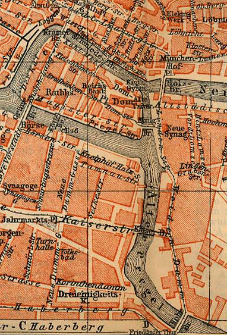

All About The Seven Bridges of Königsberg

The city of Königsberg in Prussia (now Kaliningrad, Russia) was built around two rivers with seven bridges. For years the residents tried to cross each bridge without repeating any of them. Many claimed they'd completed the walk in the middle of a drunken night, but couldn't repeat the feat in the light of day.
The mathematician Leonhard Euler proved it was impossible to cross all the bridges without repeating any and laid the foundation for graph theory and modern topology.
The Seven Bridges of Königsberg uses crazy maps, bridges, houses, tolls, and subways to create challenging puzzles. The math that drives this game is used in compuer science, bioinformatics, topology, and many other areas.
Each level is designed as a graph, and unlike the real bridges all of these are solvable. For example, the level Tic Tac Toe graphs out like this:

Design and Programming
This game was designed and programmed by Zack Grossbart. Zack also created all the levels.
- Send Zack an email at zack@grossbart.com
- Follow Zack on Twitter at @ZackGrossbart
- Connect Zack him on Google+ at +ZackGrossbart
Artwork
Most of the artwork in this game was created by Robb Perry with a few odds and ends created by Zack.
- Send Robb an email at robble@byu.net
- Follow Robb on Twitter at @robbsterino
Audio Design
PJ Belcher developed all of the sounds in this game and did all the audio design.
- Send PJ an email at pjb@pjbelcher.com
- Follow PJ on Twitter at @PJBelcher
Open Source
The Seven Bridges of Königsberg is written in Objective-C and Objective-C++, was created with Xcode, and makes extensive use of the Cocos2d-iphone and Box2d frameworks.
This game is open source and available under the Apache 2.0 license. You can buy it in the App Store, or download the source code from our GitHub page. You can run the game in the simulator for free. If you're an Apple iOS developer you can also load the game on your favorite iOS device.
Special Thanks
Special thanks to Kristen Riley, Michael Cerbone, Juan Madrigal, Lyndon Washington, Samuel Higgins, Carol Smigo, Mary Vogt, and everyone else who helped make this game possible.
Rate It
If you like The Seven Bridges of Königsberg then head over to the App store and give it 5 stars, tweet about it, or share it on Facebook. We appreciate it.